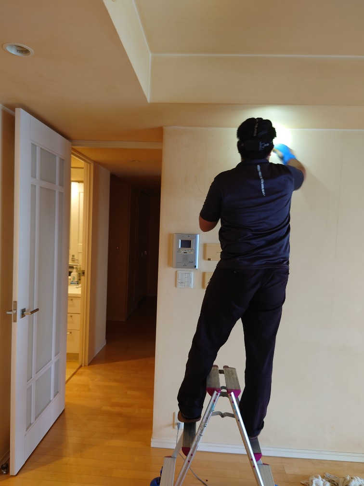
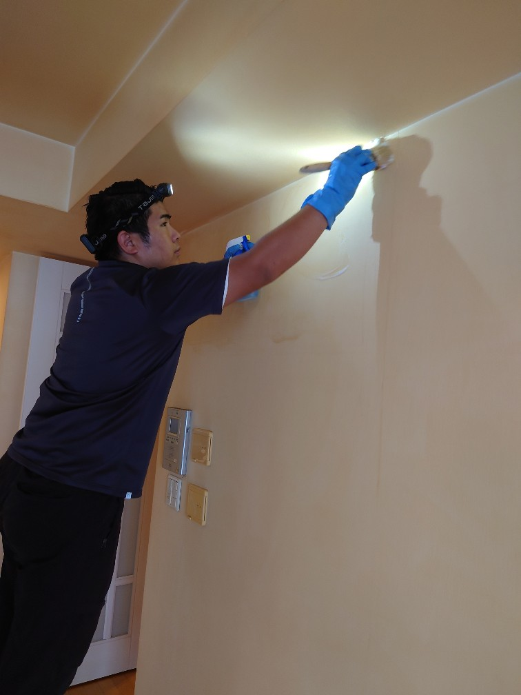
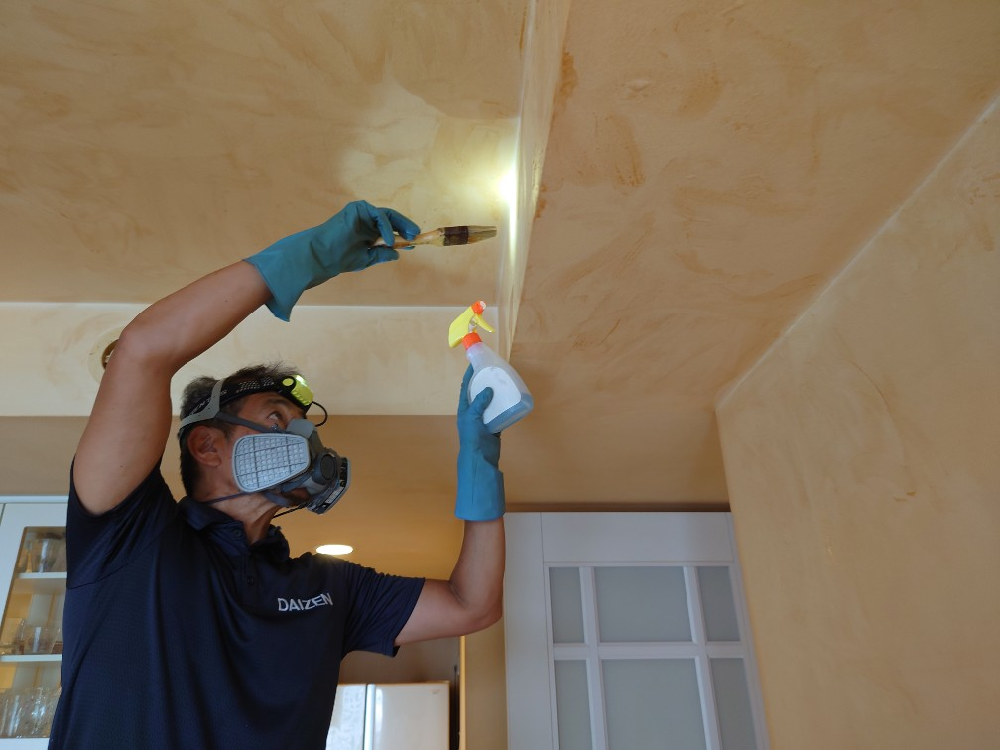
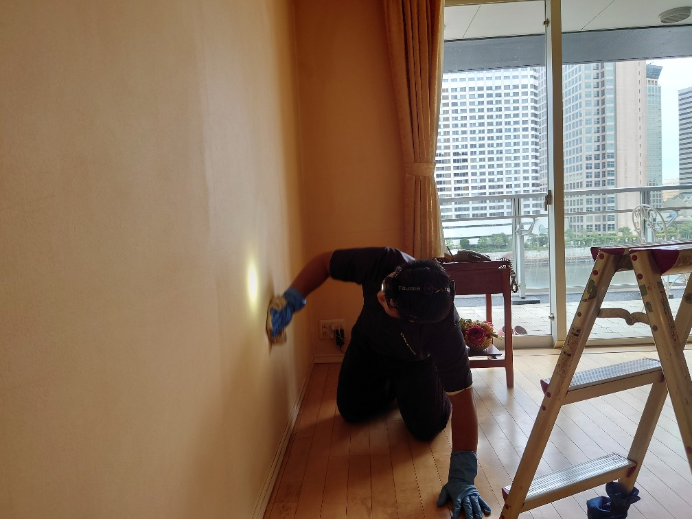
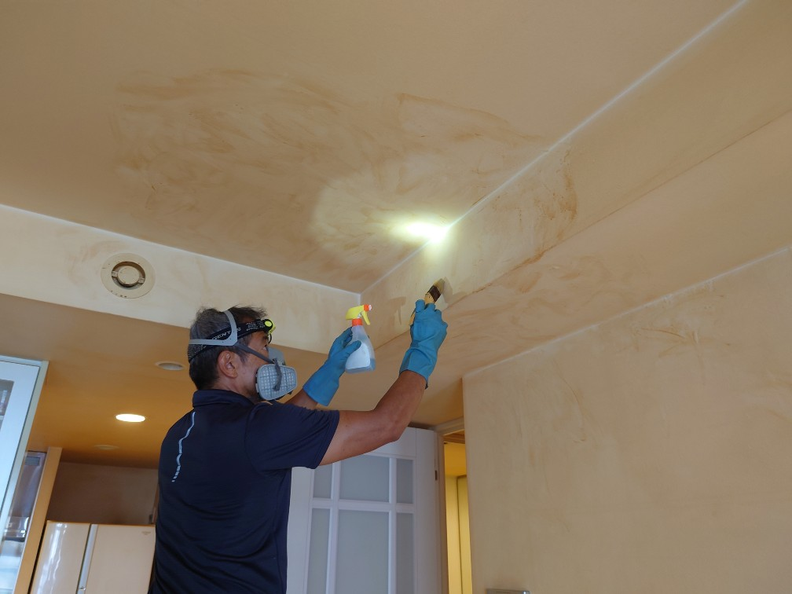
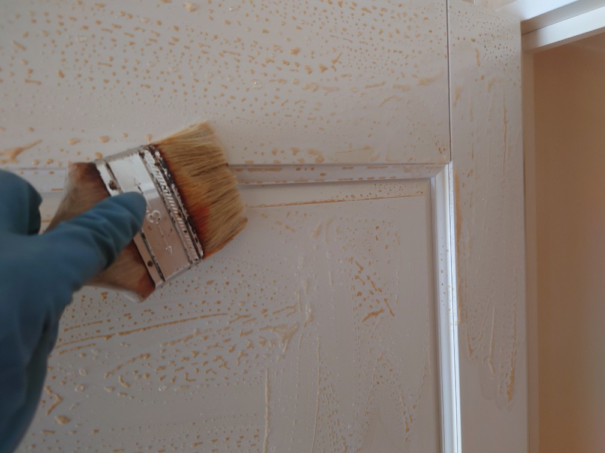
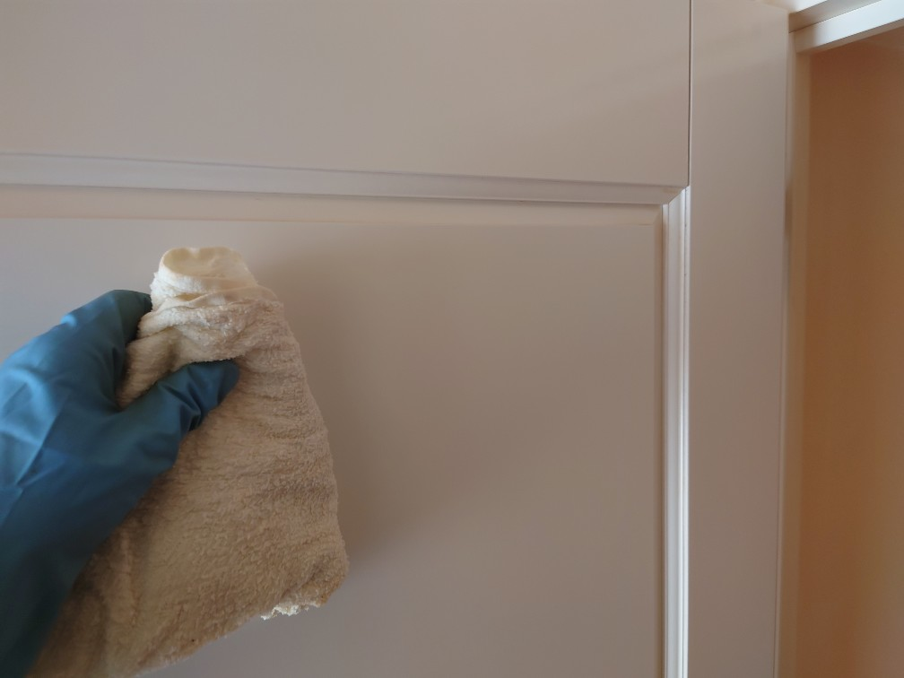
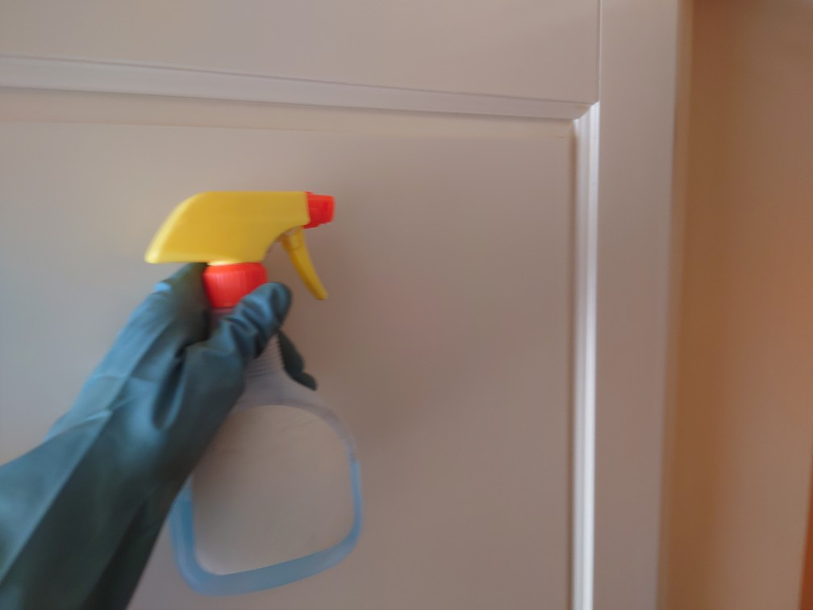
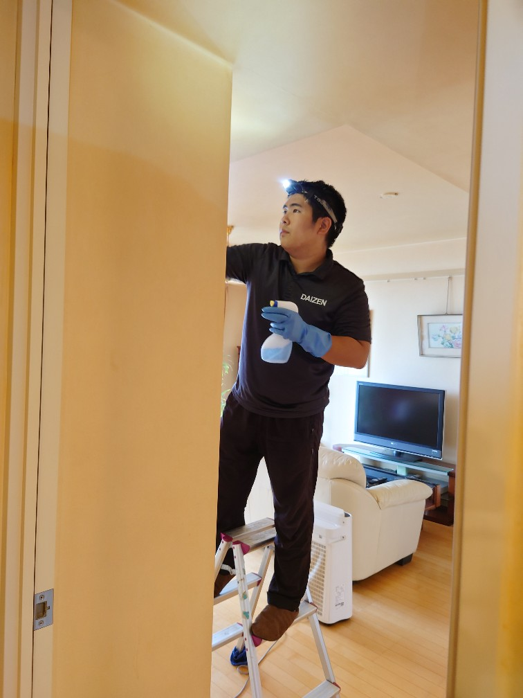

港区のタワーマンション Kさん4LDKの壁の洗浄クリーニング（タバコのヤニ取り）をしました！

港区の大型タワーマンションにお住いのKさん宅4LDKの壁面洗浄クリーニング（タバコの堆積汚れ、ヤニ取りクリーニング）をしました。とても綺麗な大型マンション4LDKなのですが、タバコの堆積汚れが気になるとのことでしたので、ヤニ取りクリーニングをしました。壁面のヤニ取りは、専用薬剤を用いて数回にわたり溶解させて、拭き取り洗浄をひたすら繰り返す、とても時間と集中力を要する地道なクリーニング作業の完遂が必要です。元の真っ白な壁面に戻すには、「壁クロス張替え」が必定な点、壁面洗浄クリーニングでは、色素沈着や変色部位は残る事をご理解頂いて、4日間のヤニ取り洗浄クリーニング作業に入りました。無事仕上げると部屋のヤニくささは無くなり、スッキリ感のある壁面になりました!カスタムリクエストの各種クリーニング作業を実施しておりますので、ぜひお問い合わせ下さい、宜しくお願いいたします!








